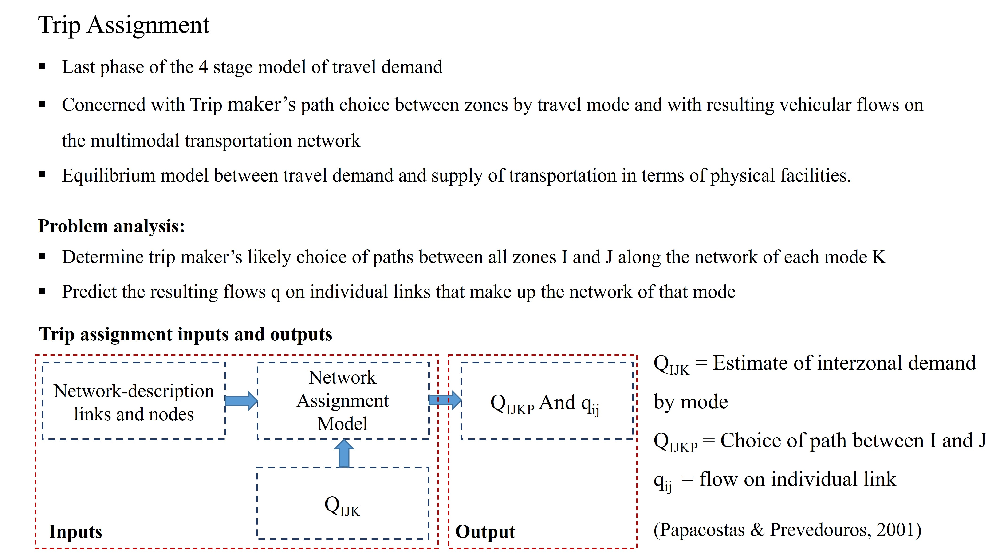
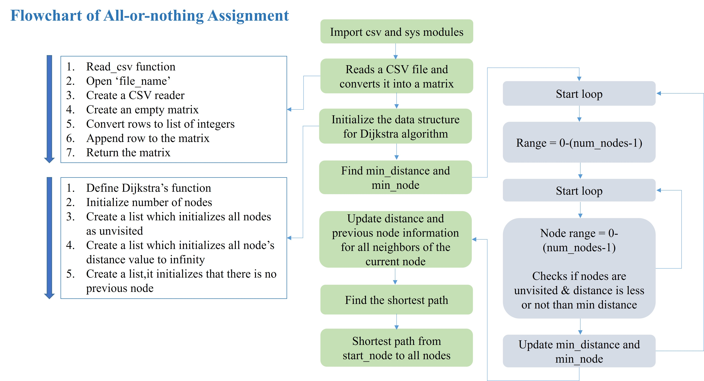
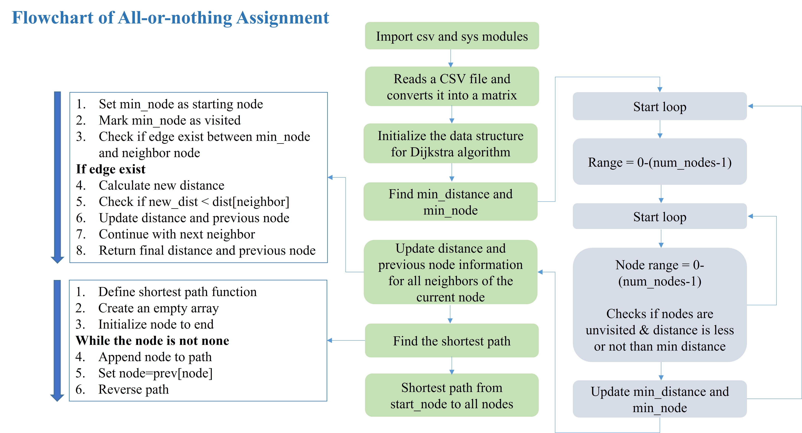
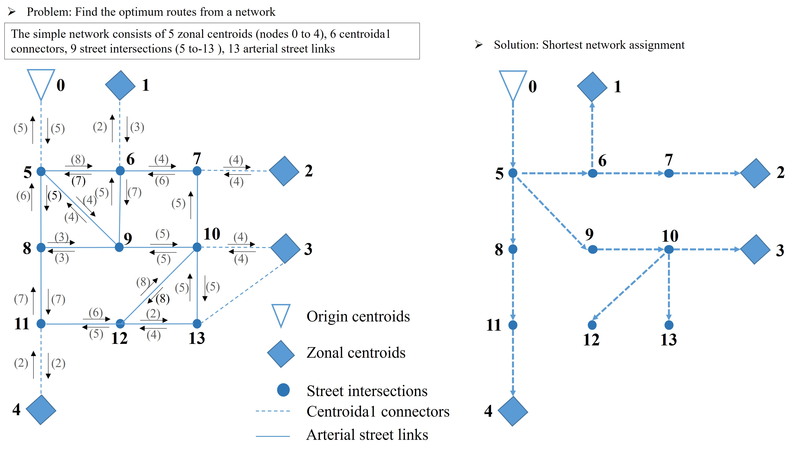

The last phase of the 4-step travel demand model that allocates OD trips to routes (by mode) and computes link flows on a multimodal network—often posed as a demand–supply equilibrium problem.
Project Presentation



